ショウキサマ/新潟県阿賀町
後編
阿賀町にある5つのショウキサマの内、平瀬と夏渡戸を紹介した。
後半は残り3地区にあるショウキサマをドドっと紹介していくので覚悟してくださいね。
大牧のショウキサマ
会津から流れてきた阿賀野川は平瀬、夏渡戸付近で大きく蛇行した後、巨大なダムのある鹿瀬、そして麒麟山のふもとの阿賀町中心部を過ぎ、大牧集落に至る。
尚、今回のショウキサマとは関係ないが、鹿瀬には第二水俣病（新潟水俣病）の原因となった工場があり、ここから水銀が垂れ流され、当時の阿賀野川流域の多くの人達の人生を激変させてしまった事は心に留めておいていただきたい。
S字に蛇行する阿賀野川は大牧付近で直線コースになり川幅をググっと増す。
山の中に似合わぬ大河が出現し、そのすぐ脇を国道が走る何とも不思議な光景に見とれていると赤い鳥居が見えてくる。
コレが大牧の村境にあるショウキサマの目印だ。
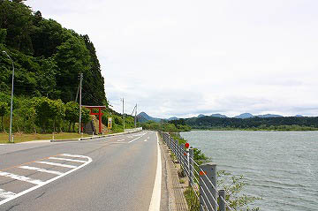 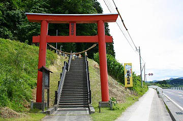
鳥居の傍らには「大牧 鍾馗大明神 阿賀町観光協会」と書かれた看板が立っている。
町内5つのショウキサマの中でも国道に面してショウキサマがあるのはここ大牧だけだ。
従って観光客に最もアピールし易い場所ゆえにこのように立派な看板が立てられたのだろう。
もっともドライブ中にこの看板を見て「おっ、ショウキサマか。寄ってみるか」というシチュエーションもかなり考えにくいのだが…
鳥居をくぐり、階段を上るといきなり磐越西線の線路が。
ショウキサマに辿り着くには明らかに線路を横断せねばならない。
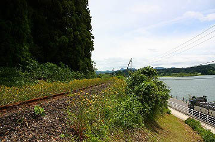
まあ、線路を歩いて横断してもいいのだが（いや、横断はダメって看板があったからダメ！絶対！なんでしょう）、もちろんドラえもんを呼んでタケコプターを出してもらいました。あ、今考えてみたらどこでもドアで線路の向こうに行った方が早かったかな(いい加減にしろ！との声が）…
で、線路を越えて斜面を登っていくと再び鳥居が見えてくる。
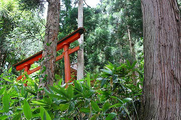
鳥居の手前の小高くなったところに山車小屋のような建物があった。
おお、これが大牧のショウキサマか、と思い中に入ってみると…何もありませんでした。
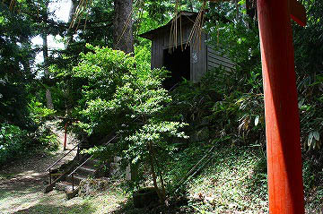 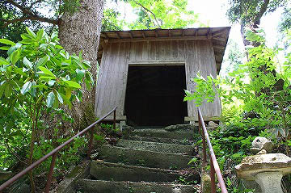
何年か前までショウキサマが納められていたお堂だったのだろう。中の寄付札を見ると昭和50年に建てられたようだ。
で、鳥居の先に新しい祠が建っている。ヨイショ、ヨイショと階段を上る。
あ、タケコプター使えばよかった…
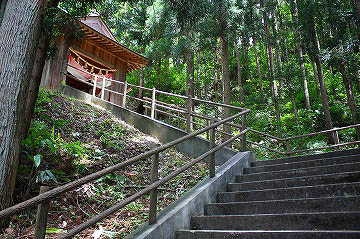 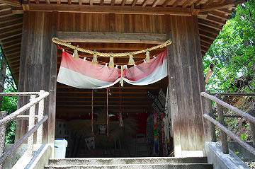
で、今度こそショウキサマ登場。
結論から言って阿賀のショウキサマの中で一番大きく立派だった。
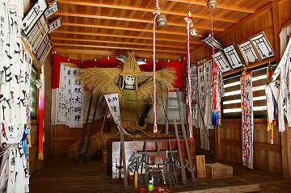

股裂き状態で座っているショウキサマ、全身でXの字を表現されている。
右手には槍のようなものを2本持っているが、もしかしたらショウキサマの身体自体を支える杖なのかもしれない。
左手には弓矢を持っている。そして刀の二本差し。
阿賀のショウキサマの中でも最も武器アイテム数が多く、戦闘力が強い御様子。
そしてなにより蓑のようなモノが頭の周りに放射状に広がっているのがマンガの「バーン！」ぽくてやけに迫力がある。
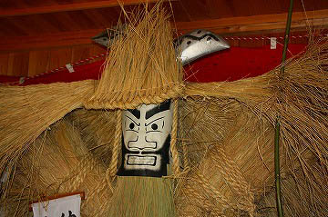
お顔は先のショウキサマに比べたらややおとなし目。というかかなり洗礼されているように見受けられる。
頭部の後に包丁のようなモノが見えるがいわゆる角、というかアンテナなのだろう。
もちろんこちらも立っ派です。
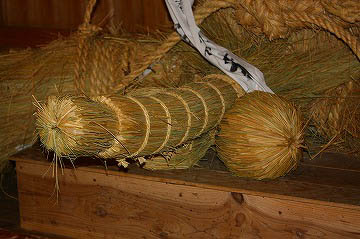
ショウキサマの前には賽銭箱が置かれ、鉄剣や鉄鳥居も奉納されている。
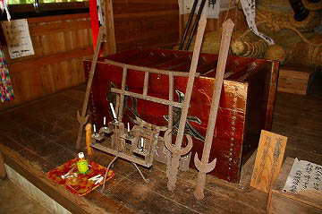
ここは他のショウキサマと違って、単に人形が祀られているだけでなく、ショウキサマを本尊とした信仰の場にまで昇華しているように見える。
それにしてもこのおどろどろしい雰囲気は一体どうしたことか。
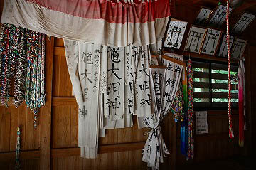
白い幟、銭鳥居、千羽鶴、鉄剣、鉄鳥居、これらの奉納物が混然一体となって濃ゆ〜い信仰世界を形成している。
このお堂はまるで昔からあるかのような佇まいだが、恐らく平成の世に出来上がったものだ。
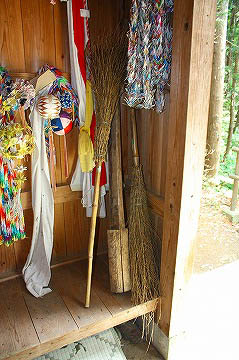
賽銭箱の横にはショウキサマの行事の日に大牧の各世帯に配布される護符代わりの姿絵があった。
これを見る限り、やはりショウキサマは鍾馗として認識されているようだ。
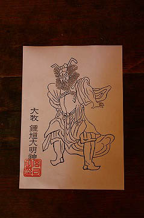
ショウキサマは元々東日本、特に東北地方を中心とした大型藁人形の影響なのだろうが、なぜそれがショウキと呼ばれ、鍾馗信仰とクロスオーバーしていったのだろう？
元々鍾馗様とは中国の神様で、日本では五月人形、あるいは祭の山車人形のモチーフとしてお馴染みの存在だ。
「強そうな人形＝鍾馗様」という単純な連想なのかも知れないが、先に述べたように秋田県内でもショウキサマという呼称があるので、問題は意外と根深いのかもしれない。
ここ大牧のショウキサマは毎年3月に作り変えられる。
これは他の地区のショウキサマにも共通している事だが、ショウキサマを製作する際、製作する人達が自分の身体の具合の悪い箇所を紙に書いてそれをショウキサマの体内に埋め込むのだという。
つまりショウキサマはある種の「厄」を内包した状態で村境に設置されることになる。
これはつまり虫追いや雛流し、どんど焼きなどで見られる依り代として災厄を封じ込める人形としての性格を帯びているのだ。
人や蛇のカタチの人形に自分のムラの災厄を埋め込んだ場合、その災厄を浄化させる行為として焼却するか解体する場合がほとんどだ。
例えば肘折雨乞で見られるように、藁で出来た巨大な竜蛇を池で解体することで人々は初めてその体内に封印された災厄から開放される、というプロセスを踏んでいる。
ここ、阿賀のショウキサマの場合、新しいショウキサマ像を作った際にお堂の裏手の斜面に解体して捨てられるという。
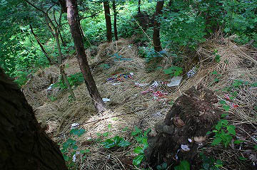
哀れ、恐ろしいまでの迫力を持ったショウキサマのなれの果て。しかしこのようにバラバラにされてはじめて去年一年の厄が消滅するのである。
そういえば船引のオニンギョウサマでもこのように古いニンギョウが解体されて裏山に遺棄されていたっけ。
基本的な構造などに違いはあれど持ち物やポーズ、それに新調する時期なども阿賀のショウキサマと船引のオニンギョウサマはよく似ている。地理的な条件だけでなく何か別の関連性があるのかもしれない。
村境に立ち災厄を防ぐ道祖神的な習俗と災厄を一旦封じ込め、解体することで帳消しにする依り代の習俗がひとつに混ざり合ったのが、ここ阿賀のショウキサマの正体なのではなかろうか。
熊渡のショウキサマ
大牧よりさらに下流、東下条駅近くに位置する熊渡地区のショウキサマはやや風変わりだ。
設置されているのは正鬼神社という名の神社だ。
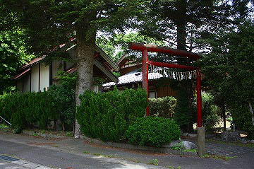
他は「鍾馗大明神」などと表記されているのだが、ここのショウキサマは正鬼大神。
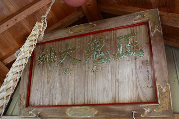 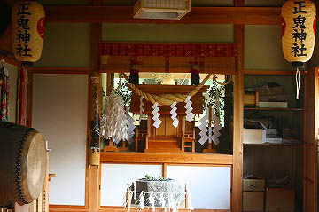
ショウキサマを設置するために作られた神社なのか、たまたまショウキサマが元々建っていたこの神社に奉納されたのかは判らないが、いずれにせよ他のショウキサマはショウキサマ専用の祠というかお堂に祀られていたが、ここのショウキサマは神社の社殿の裏に祀られている。
もともと阿賀のショウキサマは野ざらしだったそうだが、いつの間にかどこもお堂に入ってしまった。
ここ熊渡のショウキサマは屋根がかかっているものの、そういった昔のスタイルに一番近いのではなかろうか。
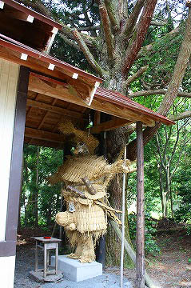 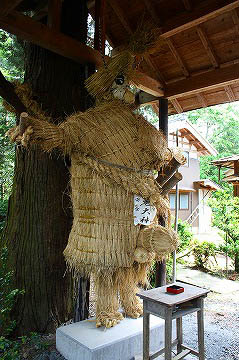
後ろから見ると大きな木につながれて立っているのがわかる。
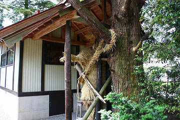
横手のショウキサマも屋外で木につながれて通せんぼをしていた。
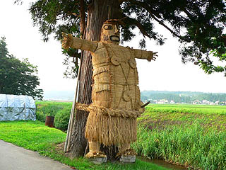
↑横手のショウキサマ
阿賀と横手、250キロ以上も離れているこの二つの土地に極めて似ている藁人形が存在しているのは何とも不思議な気分だ。
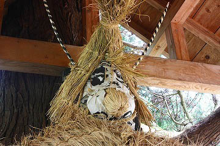
ここのショウキサマも夏渡戸と同じような縞々アンテナを着装している。
他のショウキサマの顔は紙に描いただけだが、ここのショウキサマは鼻の部分が藁で編み込んであり、立体感がある。
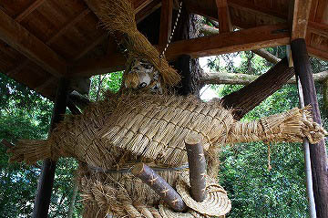
ポーズは先に述べたように通せんぼ。
右手に短剣、左手に槍を持っている。もちろん刀は二本差し。
腹には正鬼大神と書かれている。何故ここだけが「正鬼」と表記されているのかは謎だ。
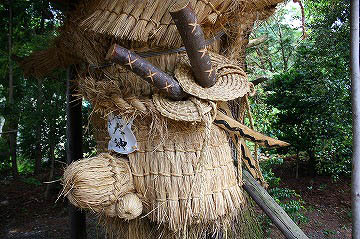
阿賀のショウキサマのお約束、巨大チンポはここでも健在。
あ、顔とチンポが同じ造りじゃないの…
さて、阿賀のショウキサマ巡りもいよいよトリである。
武須沢入（ぶすぞり）地区は阿賀野川の本流から離れている山間の集落だ。
この武須沢入では一時ショウキサマ行事が中断していたが、また復活したのだという。
集落に入る手前の三叉路にショウキサマはいた。
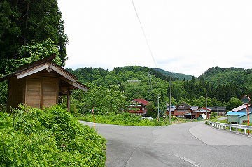
かなり新しいお堂に納まるのは比較的小さなショウキサマだった。すぐ近くには馬頭観音や鬼子母神の石碑が建っている。
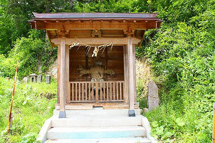
ここのショウキサマにはどういうわけか角がない。
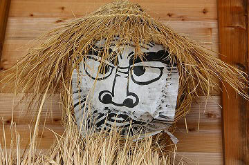
顔も比較的おとなしい印象を受ける。
右手には小刀を持っているが脇に差している刀は1本だけ。
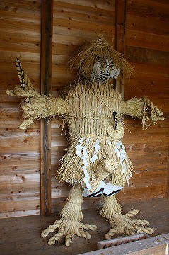
ちなみに右手に持っている小刀の刃の部分には不必要に線が描き込まれているため鷹の羽みたいになっちゃっている。
左手には縄が付いていた。用途は不明だ。
武須沢入ではショウキサマを取り替える際に百万遍の数珠回しを行うというからもしかしたら数珠を表しているのかもしれない。
大きさが比較的小さめなのも手伝ってか、珍しく自立している。
その代わりチンコもやや小さ目、とはいえギンギンにピンコ立ち。
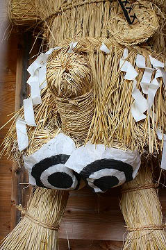
特筆すべきはバットの部分ではなくボールの部分。
目玉みたいな玉カバーが付いちゃってます。
堂内には馬に乗った鍾馗サマの絵馬が掲げられていた。
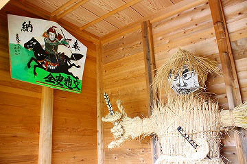 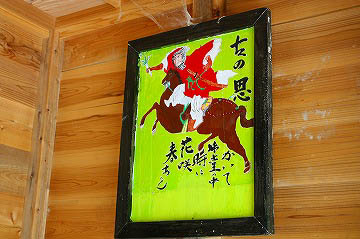
さて、これでショウキサマ巡りも終わりだ、と、一息つこうと思ったら道路沿いの斜面の上に小さなお堂があった。
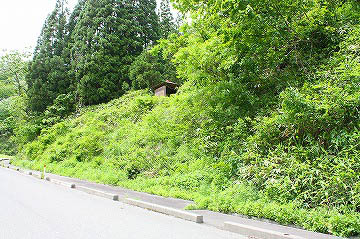
ピーンと来ましたね。先程見たショウキサマのお堂はやけに新しかったが、最近までこっちのお堂にショウキサマが祀られていたんじゃないだろうか？
斜面には草木が生えていて車道から直接上れそうもないので、近寄れそうな道を探してお堂の中を覗いてみると…
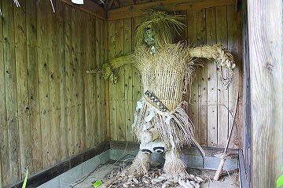
おお、ビンゴ！
以前祀られていたショウキサマじゃないか！
姿かたちは先程のショウキサマと全く同じ。
鷹の羽のような小刀も玉カバーも健在だ。
唯一違っていたのは傍らに刀が立てかけてあった事。これは左手の縄に巻きつけてあったのかも知れない。
あとは若干の経年により御髪が乱れ勝ちなところか。
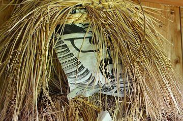
旧ショウキ堂から見下ろした車道。以前（といっても数年前）はこの斜面を小さ目とはいえ人の背丈を優に越える藁人形を背負って上ったのだ。しかも雪の積もっている時期にですよ。ああ、無形民俗文化財って大変。
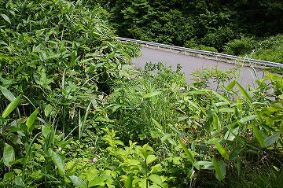
壁には鍾馗の絵が描かれていた。
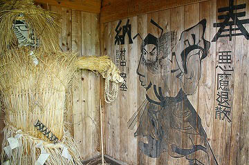
斜面を下りて車道に戻るとムラのお婆さんがいたので話を聞いてみた。
曰く
武須沢入のショウキサマは2〜3年前に移転したのだという(ちなみにその前のお堂は昭和60年に作られた）。
お婆さんはこの移転を快く思っていないようで、やはりショウキサマは高いところから見下ろさないとダメだ、と仰っていた。
ここで気になったのは、2つのショウキサマの存在である。
先に述べたように阿賀のショウキサマは災厄を体内に溜め込んだ依り代としての役割を負っている。
まあ、これが人形の本来の役割なのだが、そういった人形はいずれ破壊するか水に流すか燃やすかして封じ込められた災厄を解消しなければならないのだ。
つまりショウキサマ習俗はムラの内部の災厄を溜め込んだ状態、つまり悪い事をパンパンに詰め込んだ爆弾のようなモノを村境に設置することで、悪疫や悪人の侵入を防ぐ、という意味合いを持っているのだ。
つまり内の悪を外に向かわせる転換装置としてショウキサマは機能しているのだ(多分）。
この機能には大きな問題がある、
それは人形に封じ込められた災厄をどこかで開放しなければならないのだ。これをしないと新しく出来たムラの災厄を封じ込められないから。
そこでショウキサマの封じ込めの有効期限を1年間と設定する事になる。
つまり毎年新しいショウキサマを作ってそこに新規の災厄を封じ込め、今までのショウキサマは解体して裏山に捨てて封じ込めていた災厄を消してしまうのだ。
これはなかなか面白い習俗だと思う。
普通だったら災厄を一箇所に集めて燃やしてハイお終い、なのだが、その込められた災厄や怨念といった負のサイキックパワーをムラの防護に使う。いうなれば廃棄されるべき怨念を再利用する怨念プルサーマル計画といえよう。
さてさて、その怨念プルサーマル計画を完了させるには前の年に使われたショウキサマを解体、処分することが大前提である。
処分する事によって初めて去年の災厄が消され、新しい災厄を新しいショウキサマに込める事が出来るのだ。
ところがどうだろう。ここ武須沢入にはショウキサマが2体存在しているじゃないか。
これじゃ以前の災厄が封入されたまま放置されているということじゃない！
解体処理される事で災厄を消す、というショウキサマ習俗の基本中の基本がここではあっさりと無視されているぞ。
これは一体どういうことか。
私が勝手に描いていたショウキサマ習俗の意義などはるかに超越した深遠なる意味がここには込められているのだろうか。
それとも単にもったいない、からなのだろうか。
大いなる疑問を残しつつ、阿賀の里を後にするのであった。
越後の人形道祖神 -異形神の系譜-柏崎市立博物館 参考文献
人形道祖神 神野善冶
東蒲原郡のショウキ祭り 佐藤和彦 蒲原66号
厄祓人形祭祀の「処理」に関する一考察 石本敏也 日本民俗学224号
阿賀野川流域の厄祓人形 石本敏也 西郊民俗201号
2008.5
珍寺大道場 HOME